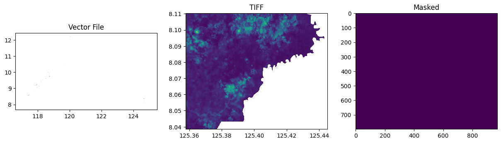

from rasterio import features
from rasterio.plot import show
from rasterio.windows import Window, transformRaster to Dataframe
load raster file as a Dataframe

Vector to Raster mask
convert vectors into raster masks where each pixel is a numerical representation of a label/category
generate_mask
generate_mask (tiff_file, shape_file, output_file, labels_column, labels_dict:Dict[str,int], plot=False)
Generates a segmentation mask for one TIFF image. Returns: image (np.array): A binary mask as a numpy array
| Type | Default | Details | |
|---|---|---|---|
| tiff_file | Path to reference TIFF file | ||
| shape_file | Path to shapefile | ||
| output_file | Path to output file | ||
| labels_column | Feature in the shapefile that contains labels/categories | ||
| labels_dict | Dict | Dictionary of desired labels and assigned values for the mask | |
| plot | bool | False | Plots vector, reference TIF image, and raster mask output |
Raster to Dataframe
Reads the bands for each image in the list and returns a dataframe where each band is one column with the image name as a suffix for column name.
read_bands
read_bands (image_list:List[str], mask:str)
Test data
Generating a raster mask
# Get filepaths
tiff_file = "../data/vector_to_raster_mask_sample/cabanglasan.tif"
shape_file = "../data/vector_to_raster_mask_sample/labels_20220816.gpkg"
target_file = shape_file.replace("gpkg", "tiff")Given a raster image of a certain area that will be masked to use as a reference and a shape file that contains that area. Note that the shape file must include a column that contains labels/categories.
gpd.read_file(shape_file).head(3)| year | label | uid | ADM3_EN | ADM3_PCODE | ADM2_EN | ADM2_PCODE | ADM1_EN | ADM1_PCODE | geometry | |
|---|---|---|---|---|---|---|---|---|---|---|
| 0 | 2017.0 | mining | 72_2017_mining | Sofronio Española | PH175324000 | Palawan | PH175300000 | Region IV-B | PH170000000 | MULTIPOLYGON Z (((117.95961 9.03303 0, 117.959... |
| 1 | 2017.0 | mining | 71_2017_mining | Sofronio Española | PH175324000 | Palawan | PH175300000 | Region IV-B | PH170000000 | MULTIPOLYGON Z (((117.95507 9.03809 0, 117.955... |
| 2 | 2017.0 | mining | 70_2017_mining | Sofronio Española | PH175324000 | Palawan | PH175300000 | Region IV-B | PH170000000 | MULTIPOLYGON Z (((117.95663 9.03869 0, 117.956... |
And a dictionary with your desired labels and assigned values in creating a mask
labels = {
"mining": 1,
"neg": 2,
"agriculture": 3,
"product_extraction": 4,
"kaingin": 5,
"biophysical": 6,
}Input them in the generate_mask function to create a raster mask of the same dimension as the reference raster image
# Generate masks for a file
masks, grids, values = generate_mask(
tiff_file=tiff_file,
shape_file=shape_file,
output_file=target_file,
labels_column="label",
labels_dict=labels,
plot=True,
)
masksarray([[0, 0, 0, ..., 0, 0, 0],
[0, 0, 0, ..., 0, 0, 0],
[0, 0, 0, ..., 0, 0, 0],
...,
[0, 0, 0, ..., 0, 0, 0],
[0, 0, 0, ..., 0, 0, 0],
[0, 0, 0, ..., 0, 0, 0]], dtype=uint16)gridsarray([[0, 0, 0, ..., 0, 0, 0],
[0, 0, 0, ..., 0, 0, 0],
[0, 0, 0, ..., 0, 0, 0],
...,
[0, 0, 0, ..., 0, 0, 0],
[0, 0, 0, ..., 0, 0, 0],
[0, 0, 0, ..., 0, 0, 0]], dtype=uint16)values{'mining': 1,
'neg': 2,
'agriculture': 3,
'product_extraction': 4,
'kaingin': 5,
'biophysical': 6}Choose raster images to convert into a dataframe and use the generated raster mask to add the labels the converted dataframe.
tiff_files = ["../data/vector_to_raster_mask_sample/cabanglasan.tif"]
mask_file = "../data/vector_to_raster_mask_sample/labels_20220816.tiff"data = read_bands(tiff_files, mask_file)data| B1_0 | B2_0 | B3_0 | B4_0 | B5_0 | B6_0 | B7_0 | B8_0 | B9_0 | B10_0 | B11_0 | B12_0 | label | |
|---|---|---|---|---|---|---|---|---|---|---|---|---|---|
| 0 | 0.1198 | 0.09635 | 0.09330 | 0.0698 | 0.10665 | 0.20250 | 0.2490 | 0.23525 | 0.28125 | 0.0377 | 0.19925 | 0.1002 | 0 |
| 1 | 0.1198 | 0.09580 | 0.09245 | 0.0708 | 0.10665 | 0.20250 | 0.2490 | 0.23925 | 0.28125 | 0.0377 | 0.19925 | 0.1002 | 0 |
| 2 | 0.1148 | 0.09420 | 0.09460 | 0.0707 | 0.10380 | 0.20395 | 0.2478 | 0.23150 | 0.27165 | 0.0385 | 0.18240 | 0.0902 | 0 |
| 3 | 0.1148 | 0.09190 | 0.08850 | 0.0631 | 0.10380 | 0.20395 | 0.2478 | 0.23300 | 0.27165 | 0.0385 | 0.18240 | 0.0902 | 0 |
| 4 | 0.1148 | 0.09350 | 0.09080 | 0.0643 | 0.10565 | 0.20830 | 0.2466 | 0.24205 | 0.26990 | 0.0385 | 0.18050 | 0.0894 | 0 |
| ... | ... | ... | ... | ... | ... | ... | ... | ... | ... | ... | ... | ... | ... |
| 775824 | 0.0000 | 0.00000 | 0.00000 | 0.0000 | 0.00000 | 0.00000 | 0.0000 | 0.00000 | 0.00000 | 0.0000 | 0.00000 | 0.0000 | 0 |
| 775825 | 0.0000 | 0.00000 | 0.00000 | 0.0000 | 0.00000 | 0.00000 | 0.0000 | 0.00000 | 0.00000 | 0.0000 | 0.00000 | 0.0000 | 0 |
| 775826 | 0.0000 | 0.00000 | 0.00000 | 0.0000 | 0.00000 | 0.00000 | 0.0000 | 0.00000 | 0.00000 | 0.0000 | 0.00000 | 0.0000 | 0 |
| 775827 | 0.0000 | 0.00000 | 0.00000 | 0.0000 | 0.00000 | 0.00000 | 0.0000 | 0.00000 | 0.00000 | 0.0000 | 0.00000 | 0.0000 | 0 |
| 775828 | 0.0000 | 0.00000 | 0.00000 | 0.0000 | 0.00000 | 0.00000 | 0.0000 | 0.00000 | 0.00000 | 0.0000 | 0.00000 | 0.0000 | 0 |
775829 rows × 13 columns